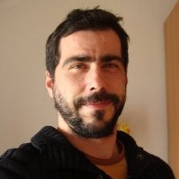
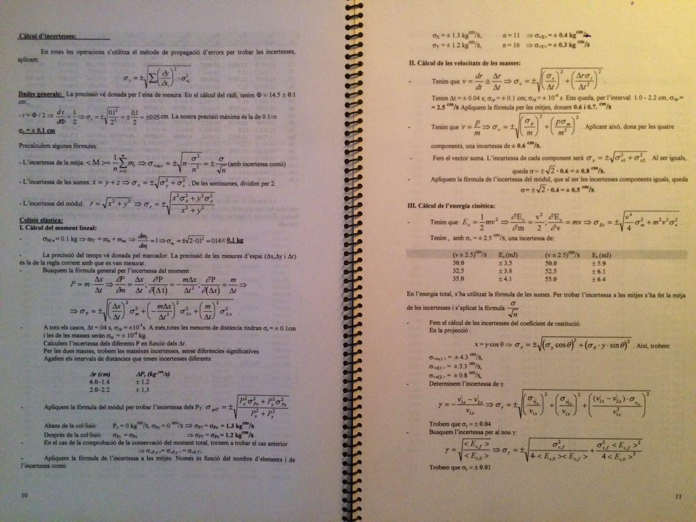

|  |
Personal dataDavid Tordera Sanchez-CamachoBorn 1977-01-09 Living in Cerdanyola del Valles (Barcelona) In 'pair-in-law' status, with 3 childs With valid driver license dtordera@gmail.com (+34)660548441 |
Currently usedC#WCF ASPX/.NET Java (EE, Android) Vaadin Spring Hikari JAX-WS/RS Eclipse Git Maven Spring (SpringBoot) SQL Server, MySql TCP/IP communiations SOAP Webservices REST/JSON Webservices HTML/Javascript Encryption/security Nginx Apache/Tomcat, Glassfish Linux/Debian administrator Delphi POS Machines |
Used in the pastCPowerBuilder Visual C++ AutoCAD Catia V5 3D Programming |
Learning/sandboxNOSQL databasesArduino Three.js & WebGL 2.0 Spring (full) Docker Primefaces |
OfficialSecondary education, Sa Palomera, (Blanes)Physics Science career, U.A.B. (BCN) Architecture, ETSAV (BCN) |
OtherCensolar, Solar Energy installations courseCatia 3D, CIM Foundation course various Networks courses |
LanguagesCatalan, Spanish : nativeEnglish : fluent speech, technical reading & writing German : Studying. Very basic conversation. |
|

|
Academical briefMy academic life began then in Blanes, at Secondary college Sa Palomera: I choose technical-scientific option, with a 8.2/10 final qualification (year 1995). I began then Physics Science career in Autonomous University of Barcelona (UAB, 1996). Although I got good qualifications in some of the matters (the most in the utility, mathematical part, Algebra, Calculus or Complex Numbers) the fact is that I get bored with it, and with the Spanish work perspective for Physics (current average wage is less than 1000€. At that time, it was yet lower) I decided to abandon it (year 1999) and begin Superior Architecture in Superior Architecture Technical School of Valles (ETSAV). Although I like it and got good qualifications again, by personal motives I got to to again abandon it (2001) and began to work.Computer science autoteachingAlthough my academic life & unfinished careers, there was another passion that went parallel to my 'official' studies: coding. Begin to code at age of 13 with Spectrum 48k, in Basic. I kept my self-teaching at my secondary teaching phase, as in college, programming in Borland C 3.1, using the Scene techniques of the moment (raytracing, mode 13h, mode x, begins of 3D, pointers, structures, etc), applying learned math, and as well begin to move in telematics (remember that in that time there was no internet, just BBSs). It continued in my College phase when I begin to move to visual languages as Delphi or PowerBuilder and database/SQL working (both, OOP, visual and SQL was just then spreading). In fact, here I begin to sell some of my Delphi programs to real small business (one of them are still working/used at today by that business, with more than 15 years of contiuous work without maintenance)Somebody can though that if I like to coding why not then I choose Computer Science as career. Again, please note that in that epoch (the 90's) Computer Science was just exploding here in Spain: there was no real career of computer science, and when it appears, anyway, it's teachings were really basics (internet were not widely spread in Spain until 1998 approximately) So, then, with my self-teaching I kept a good level on C (and on & 8086 asm), that I think are the best languages for a real good basis on programming. I had discovered recently that this way of self-learning (searching one for himself how to do anything had seen, that's it, using self-creating algorithms, breaking my head for specific problems, limited access to documentation, no internet, etc, ...) and with the science method learned had provided to me a waste bunch of tools to detect & to solve problems that, for example, a career-coming professional doesn't get at first. In fact, as a personal observation, in my current job, where I act as technical interviewer & recruiter, we had observed that the ones that passes the problems we pose, the main, and the pretenders who insists to solve them, comes from self-teaching or non-canonical learning paths, instead from that who comes from college career, that the most attempt the main/canonical solution, and when it does not work (our problems got little traps), then they just don't attempt anything more. Of course this is just a personal observation, that cannot be considered as a law: I know excellent career professionals as well. Professional life briefMy professional life (of qualified works) began at summer of 2001, where I was working as junior coder in a 3D C game project, at Compumatic Research S.L., Sant Cugat. We use there Linux, gcc & Aurora as editor, and perform a modification of DOOM game WAD files (terrain files) & 3D texturing engine: project was a 3D car game to teach kids the basis of driving.From next year, 2002, until approximately 2011, due my knowledge of computer science, 3D, and architecture, and drawing options, I begin to work as draftsman for different architectural offices. There I use Autocad, programming concrete macros for administration (Visual Basic in Excel, Access) and tools in Autocad itself (AutoLisp). As well, knowledge of 3D techniques let me to draw good 3D simulations and to solve day-of problems, optimizing rendering systems & plottering ones; as well, the use of my coded tools avoid wasting time in routine tasks, etc, making improvements in the general work-flow of the office. Sadly, there was a general construction crisis on 2011, as well that internals problems in the last office I was working (Pilar Gimeno Arquitectes, Lloret de Mar) I left work and decide to migrate to code jobs again. CSQ. NowadaysOne year and a half later, during the latest economical Spanish crisis, I moved to Barcelona, where I found job as coder at CSQ Non Stop Shops, a very well positioned topup/payment business in Spain, South America & U.S.A. My first duties were the maintenance of the backend platform & the development of modules to consume online international providers APIs. As this business it's focused on online topups & electronical money, the quantity of communication tasks it's really big, and there was so the chance to work with the big telephony operators of the moment, and so, with the big electronical communication foundations (Telefonica, Orange, LycaMobile, Paysafecard, etc). From there I had been growing in the company, learning really a lot, and beginning to be actual second boss of technical department (from 3 years right now), project/team manager, analyst & API architech for the different solutions in the business, etc.My current duties are, basically: - To design API layers for our customer wholesalers/distributors consumption (understand it as the API layer that POS machines consume, or customer web pages, or backend platforms). - To analyze new projects/scenarios that come and manage teams for new developments if in need, or to adapt existing ones to them, integrating them in our current system. - To prepare the modules for our providers API consumption - To visualize next steps for IT+D department, and prepare the best situation when it arrives. - As technical recruiter, interviewer - As level 0 for issues/outages/problems. - As well, and not less, as we are a multinational corporation, to teach coding to resources that perhaps haven't got same opportunities as European/USA ones, giving then more independence to other countries' corp teams. - All low-level communication/programming analysis Basically, all that what goes to low level, working hand to hand with bussiness companies as : TransferTo, Paysafecard, Movistar, Vodafone, DEXGA, Lycamobile, Lebara, Orange, Orange Dominican Republic, Vox Telecom, Prepaynation, Necomplus, ANSIB, Ingenico, Prasan, Multicomm, Cubacel, Claro, Airtel, Orange Africa, and a lot more... As you can see, my current job it's really interesting, and an everyday challenge, as for the technical point of view, and as for the international character of the corporation. MoreMy main current duties are focused on backend communications, and they are, indeed, growing a lot. Scalability, stability & easy deployment are right now the principal path to go. We're then investigating with complex systems tools to manage microservices, as can be Spring Framework, Hystrix, Nginx, etc. As well, we had found a lot of times limitations of standard SQL Databases, the most the need of regular structure, and server's availability/scalability, so we're too investigating with MongoDB and similar NoSQL tools.At front-end, as always had personally liked 3D representation, I'm currently investigating with Three.js and WebGL. SamplesYou can see some samples of my work in my personal coding blog, David's code vault. There are some examples about how work antique graphic techniques in modern languages (double-buffering example, 'fire effect', 'plasma effect', ...), explanation of some algorithms (diamond-square, deep-search, ...), and some sandbox (three.js),etc. It refers too to working examples. All sandbox code is in Github, freely accessible for all. There is too a first attempt for an universal transactional platform, a personal project for a sales backend platform, easy to configure via web interface, and enough flexible to allow new business models & products & business rules without a big effort. |